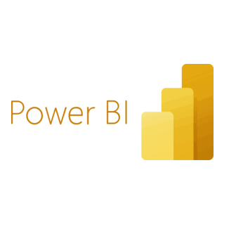
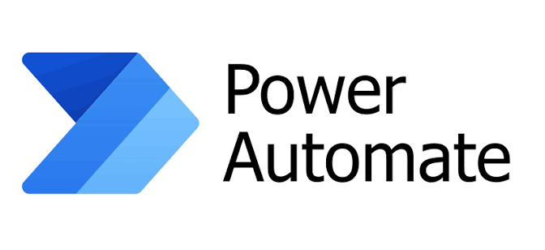

Non-product software (NPS), the internal tools, scripts, and systems that support manufacturing and quality processes without being part of the medical device itself, still falls squarely under ISO 13485. That means every NPS tool needs an owner, documented design inputs, a test strategy, and a paper trail, whether it's a two-line script or a full internal application. Going into this co-op, that entire ownership and tracking process ran manually: a hidden layer of quality risk that nobody had a clean way to see, let alone report on.


The process of assigning, tracking, and re-certifying ownership of every NPS tool in the system was entirely manual, emails, spreadsheets, and institutional memory. I rebuilt that workflow in Power Automate, so ownership assignment, renewal reminders, and status tracking all run themselves. The result: 260 hours of manual effort eliminated, and, just as importantly, the whole workflow now runs in a way that's inherently ISO 13485 compliant, since every action is logged and traceable by design instead of relying on someone remembering to document it.
Before this, there was no single place to see how NPS tools across the org were actually performing, leadership decisions on new product initiatives were being made without real visibility into the software risk underneath them. I designed and built 3 Power BI dashboards tracking 11 KPIs spanning ownership status, re-certification timelines, and usage patterns, turning a blind spot into a live, at-a-glance view that speeds up how fast leadership can actually make a call.
Automation is only as trustworthy as the documentation behind it. I authored new NPS design inputs, unit-test strategies, acceptance criteria, and contingency plans from the ground up, the technical backbone that makes the automated workflows defensible in an audit, not just convenient. Having real contingency planning in place ahead of time reduced anticipated system downtime during an NPS failure by roughly 25%.
None of this mattered if it couldn't survive an audit. Every automated workflow and every dashboard was built and documented to stay fully traceable under ISO 13485 quality system requirements, so the systems doing the work could also prove, on demand, that the work was done correctly.
This co-op was ultimately about turning a manual, error-prone quality process into a system that runs itself, and reports on its own health without being asked.
This role sat right at the intersection of quality systems and data engineering, using Power Automate and Power BI to make compliance and decision-making faster, while authoring the underlying design documentation that keeps every automated system audit-ready under ISO 13485.